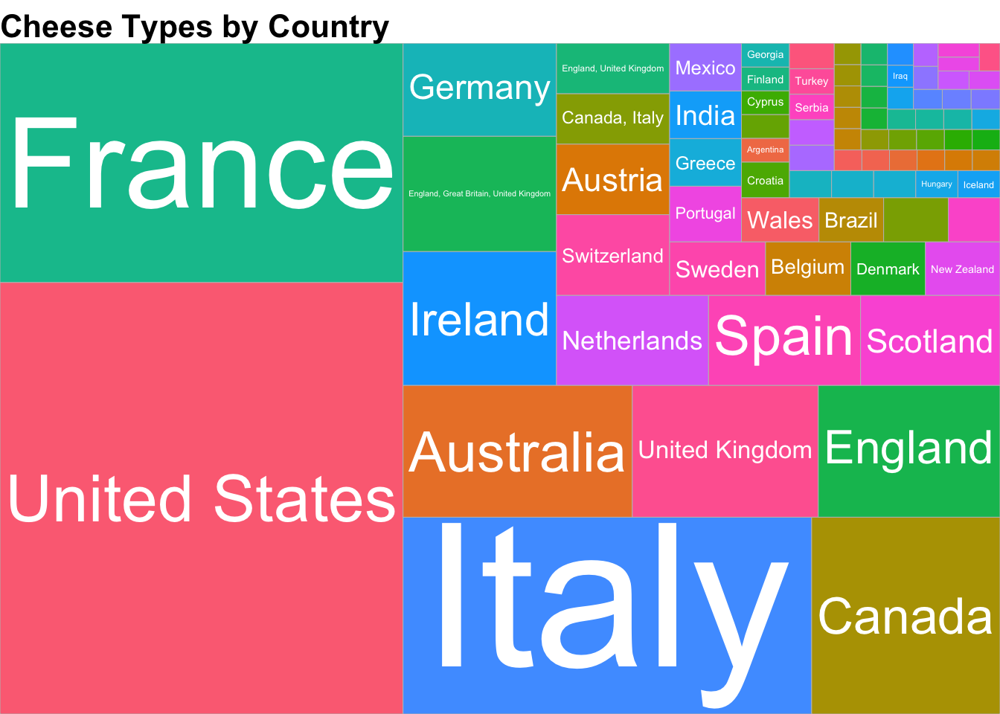
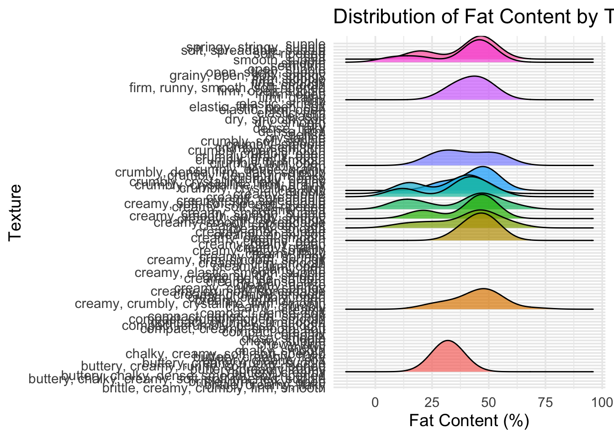
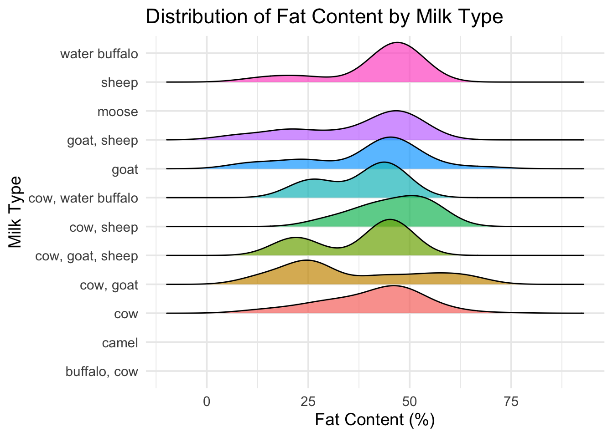
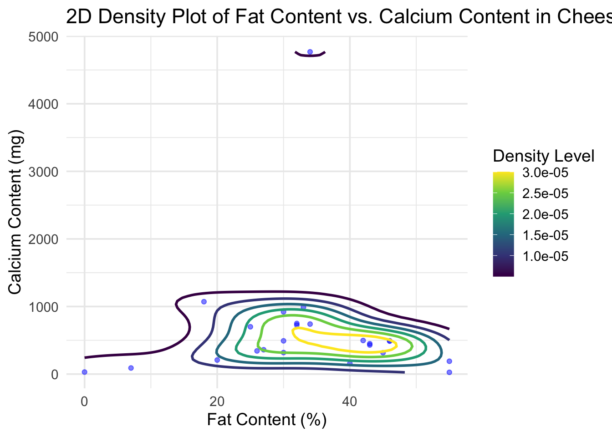

# Load libraries
library(tidyverse)## ── Attaching core tidyverse packages ──────────────────────── tidyverse 2.0.0 ──
## ✔ dplyr 1.1.4 ✔ readr 2.1.5
## ✔ forcats 1.0.0 ✔ stringr 1.5.1
## ✔ ggplot2 3.5.1 ✔ tibble 3.2.1
## ✔ lubridate 1.9.4 ✔ tidyr 1.3.1
## ✔ purrr 1.0.2
## ── Conflicts ────────────────────────────────────────── tidyverse_conflicts() ──
## ✖ dplyr::filter() masks stats::filter()
## ✖ dplyr::lag() masks stats::lag()
## ℹ Use the conflicted package (<http://conflicted.r-lib.org/>) to force all conflicts to become errorslibrary(ggthemes)
library(ggridges)
library(ggrepel)
library(treemapify)# Load the Cheese Characteristics dataset
cheese <- readr::read_csv('https://raw.githubusercontent.com/rfordatascience/tidytuesday/main/data/2024/2024-06-04/cheeses.csv')## Rows: 1187 Columns: 19
## ── Column specification ────────────────────────────────────────────────────────
## Delimiter: ","
## chr (17): cheese, url, milk, country, region, family, type, fat_content, cal...
## lgl (2): vegetarian, vegan
##
## ℹ Use `spec()` to retrieve the full column specification for this data.
## ℹ Specify the column types or set `show_col_types = FALSE` to quiet this message.# Peek at the data
glimpse(cheese)## Rows: 1,187
## Columns: 19
## $ cheese <chr> "Aarewasser", "Abbaye de Belloc", "Abbaye de Belval", …
## $ url <chr> "https://www.cheese.com/aarewasser/", "https://www.che…
## $ milk <chr> "cow", "sheep", "cow", "cow", "cow", "cow", "cow", "co…
## $ country <chr> "Switzerland", "France", "France", "France", "France",…
## $ region <chr> NA, "Pays Basque", NA, "Burgundy", "Savoie", "province…
## $ family <chr> NA, NA, NA, NA, NA, NA, NA, "Cheddar", NA, NA, NA, NA,…
## $ type <chr> "semi-soft", "semi-hard, artisan", "semi-hard", "semi-…
## $ fat_content <chr> NA, NA, "40-46%", NA, NA, NA, "50%", NA, "45%", NA, NA…
## $ calcium_content <chr> NA, NA, NA, NA, NA, NA, NA, NA, NA, NA, NA, NA, NA, NA…
## $ texture <chr> "buttery", "creamy, dense, firm", "elastic", "creamy, …
## $ rind <chr> "washed", "natural", "washed", "washed", "washed", "wa…
## $ color <chr> "yellow", "yellow", "ivory", "white", "white", "pale y…
## $ flavor <chr> "sweet", "burnt caramel", NA, "acidic, milky, smooth",…
## $ aroma <chr> "buttery", "lanoline", "aromatic", "barnyardy, earthy"…
## $ vegetarian <lgl> FALSE, TRUE, FALSE, FALSE, FALSE, FALSE, FALSE, TRUE, …
## $ vegan <lgl> FALSE, FALSE, FALSE, FALSE, FALSE, FALSE, FALSE, FALSE…
## $ synonyms <chr> NA, "Abbaye Notre-Dame de Belloc", NA, NA, NA, NA, NA,…
## $ alt_spellings <chr> NA, NA, NA, NA, "Tamié, Trappiste de Tamie, Abbey of T…
## $ producers <chr> "Jumi", NA, NA, NA, NA, "Abbaye Cistercienne NOTRE-DAM…# Load necessary libraries
library(tidyverse)
library(treemapify)
# Load the Cheese Characteristics dataset
cheese <- readr::read_csv('https://raw.githubusercontent.com/rfordatascience/tidytuesday/main/data/2024/2024-06-04/cheeses.csv')## Rows: 1187 Columns: 19
## ── Column specification ────────────────────────────────────────────────────────
## Delimiter: ","
## chr (17): cheese, url, milk, country, region, family, type, fat_content, cal...
## lgl (2): vegetarian, vegan
##
## ℹ Use `spec()` to retrieve the full column specification for this data.
## ℹ Specify the column types or set `show_col_types = FALSE` to quiet this message.# Summarize the number of cheese types per country
cheese_country_count <- cheese %>%
count(country, sort = TRUE) %>%
filter(!is.na(country))
# Create the treemap plot
treemap_plot <- ggplot(cheese_country_count, aes(area = n, fill = country, label = country)) +
geom_treemap() +
geom_treemap_text(color = "white", place = "centre", grow = TRUE) +
theme_void(base_size = 14) + # Set a base font size for better readability
ggtitle("Cheese Types by Country") +
theme(plot.title = element_text(size = 16, face = "bold"),
legend.position = "none") # Hide the legend to prevent overcrowding
# Display the plot
print(treemap_plot)
# Save the plot to a file with specified dimensions
ggsave("cheese_treemap.pdf", treemap_plot, width = 10, height = 8, dpi = 300)library(tidyverse)
library(ggridges)
# Clean fat_content column into numeric (average if it's a range)
cheese_clean <- cheese %>%
filter(!is.na(fat_content), !is.na(texture)) %>%
mutate(
fat_clean = str_extract_all(fat_content, "\\d+") %>%
map_dbl(~ mean(as.numeric(.)))
)
# Now make the ridgeline plot
ridgeline_plot <- cheese_clean %>%
ggplot(aes(x = fat_clean, y = texture, fill = texture)) +
geom_density_ridges(scale = 1.2, alpha = 0.7, color = "black") +
theme_minimal(base_size = 14) +
labs(
title = "Distribution of Fat Content by Texture",
x = "Fat Content (%)",
y = "Texture"
) +
theme(legend.position = "none")
ridgeline_plot## Picking joint bandwidth of 7 3. Scatter plot: fat vs moisture by milk type with annotations
# Scatter plot with annotations
library(tidyverse)
library(ggridges)
cheese_clean <- cheese %>%
filter(!is.na(fat_content) & !is.na(milk)) %>%
mutate(
fat_content_numeric = str_extract_all(fat_content, "\\d+") %>%
map_dbl(~ mean(as.numeric(.)))
)
ggplot(cheese_clean, aes(x = fat_content_numeric, y = milk, fill = milk)) +
geom_density_ridges(scale = 1.2, alpha = 0.7, color = "black") +
theme_minimal(base_size = 14) +
labs(
title = "Distribution of Fat Content by Milk Type",
x = "Fat Content (%)",
y = "Milk Type"
) +
theme(legend.position = "none")## Picking joint bandwidth of 5.95 4. Mosaic-style bar plot: milk type vs texture
# Load necessary libraries
library(tidyverse)
library(ggplot2)
# Load the Cheese Characteristics dataset
cheese <- readr::read_csv('https://raw.githubusercontent.com/rfordatascience/tidytuesday/master/data/2024/2024-06-04/cheeses.csv')## Rows: 1187 Columns: 19
## ── Column specification ────────────────────────────────────────────────────────
## Delimiter: ","
## chr (17): cheese, url, milk, country, region, family, type, fat_content, cal...
## lgl (2): vegetarian, vegan
##
## ℹ Use `spec()` to retrieve the full column specification for this data.
## ℹ Specify the column types or set `show_col_types = FALSE` to quiet this message.# Data Cleaning and Preparation
cheese_clean <- cheese %>%
# Filter out rows with missing fat_content or calcium_content
filter(!is.na(fat_content) & !is.na(calcium_content)) %>%
# Extract numeric values from fat_content and calcium_content
mutate(
fat_content_numeric = str_extract(fat_content, "\\d+") %>% as.numeric(),
calcium_content_numeric = str_extract(calcium_content, "\\d+") %>% as.numeric()
) %>%
# Remove rows where extraction failed (resulting in NA values)
filter(!is.na(fat_content_numeric) & !is.na(calcium_content_numeric))
# Create the 2D Density Plot
density_plot <- ggplot(cheese_clean, aes(x = fat_content_numeric, y = calcium_content_numeric)) +
geom_point(alpha = 0.5, color = "blue") + # Scatter plot layer
geom_density2d(aes(color = ..level..), size = 1) + # 2D density contours
scale_color_viridis_c() + # Color scale for density levels
theme_minimal(base_size = 14) + # Minimal theme with base font size
labs(
title = "2D Density Plot of Fat Content vs. Calcium Content in Cheeses",
x = "Fat Content (%)",
y = "Calcium Content (mg)",
color = "Density Level"
)## Warning: Using `size` aesthetic for lines was deprecated in ggplot2 3.4.0.
## ℹ Please use `linewidth` instead.
## This warning is displayed once every 8 hours.
## Call `lifecycle::last_lifecycle_warnings()` to see where this warning was
## generated.# Display the plot
print(density_plot)## Warning: The dot-dot notation (`..level..`) was deprecated in ggplot2 3.4.0.
## ℹ Please use `after_stat(level)` instead.
## This warning is displayed once every 8 hours.
## Call `lifecycle::last_lifecycle_warnings()` to see where this warning was
## generated.
# Save the plot to a file
ggsave("cheese_density_plot.pdf", density_plot, width = 10, height = 8, dpi = 300)```